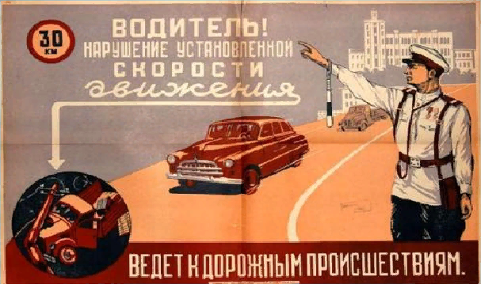

История ПДД
 Первые известные попытки упорядочить городское движение были предприняты ещё в Древнем Риме Гаем Юлием Цезарем. По его указу в 50-х годах до н. э. на некоторых улицах города было введено одностороннее движение. С восхода солнца и до конца «рабочего дня» (примерно за два часа до его захода), был запрещён проезд частных повозок, колесниц и экипажей. Приезжие были обязаны оставлять свой транспорт за чертой города и передвигаться по Риму пешком, либо наняв паланкин. На дорогах империи было принято левостороннее движение, позволяющее оставлять правую (вооруженную) руку свободной. Тогда же была учреждена специальная служба надзора за соблюдением этих правил, в неё набирали в основном бывших пожарных из числа вольноотпущенников. Основные обязанности таких регулировщиков заключались в предотвращении конфликтов и драк между владельцами транспортных средств. Многие перекрёстки оставались нерегулируемыми. Знатные вельможи могли обеспечить себе беспрепятственный проезд по городу — они высылали впереди своих экипажей скороходов, которые расчищали улицы для проезда хозяина.
Современная история правил дорожного движения берёт начало в Лондоне 10 декабря 1868 года на площади перед Парламентом был установлен механический железнодорожный семафор с цветным диском. Его изобретатель — Джон П. Найт (John Peake Knigh) — был специалистом по железнодорожным семафорам. Устройство управлялось вручную и имело два семафорных крыла. Крылья могли занимать разные положения: горизонтальное — сигнал «стоп»; и опущенные под углом 45 градусов — можно двигаться с осторожностью. С наступлением темноты включали вращающийся газовый фонарь, который подавал сигналы красным и зелёным светом. К семафору был приставлен слуга в ливрее, в обязанности которого входило поднимать и опускать стрелу и поворачивать фонарь. Однако техническая реализация устройства оказалась неудачной: скрежет цепи подъёмного механизма был настолько сильным, что проезжавшие лошади шарахались и вставали на дыбы. Не проработав и месяца, 2 января 1869 года семафор взорвался, находившийся при нём полицейский был ранен.
В 1865 году парламентом Великобритании был принят закон, по которому скорость транспорта была ограничена 6 км/ч, а перед автомобилем должен был идти человек, размахивая красным флагом. Последний пункт был упразднен в 1878 году. По другим данным, правило «красного флага» было отменено только в 1896 году, вместе с повышением ограничения скорости до 23 км/ч и упразднением требования наличия экипажа из трех человек (машинист, помощник и кочегар) для легкомоторных (до 3 т снаряжённой массы) безлошадных транспортных средств, то есть было юридически признано отличие автомобилей от локомотивов, что дало толчок развитию британского автомобилестроения. Еще раз скоростной лимит был повышен в 1903 году, а окончательно законы 1896 и 1903 годов были отменены в Великобритании только в 1930 году.
14 августа 1893 года во Франции приняли первые правила движения для автомобилей.
Прототипами современных дорожных знаков можно считать таблички, на которых указывалось направление движения к населённому пункту и расстояние до него. Решение о создании единых европейских правил дорожного движения было принято в 1909 году на всемирной конференции в Париже, ввиду увеличения числа автомобилей, роста скоростей и интенсивности движения на городских улицах. На ней были определены дорожные знаки, близкие современным — «Железнодорожный переезд со шлагбаумом», «Пересечение равнозначных дорог», «Неровная дорога» и «Опасный поворот».
В 1914 году в США начали устанавливать первые электрические светофоры с двумя сигналами (зеленым и красным), для предупреждения о смене цвета к ним был приставлен полицейский со свистком, которые позднее — с 1918 года — появились и на европейских дорогах.
В 20-х годах в США появился ОСАГО — вид обязательного страхования, связанный с рисками гражданской ответственности владельцев транспортных средств по обязательствам, возникшим в результате их использования и причинения вреда имуществу, здоровью или жизни потерпевших.
Следующим важным шагом стало принятие «Конвенции о введении единообразия в сигнализацию на дорогах» в 1931 году в Женеве, на Конференции по дорожному движению, в которой среди прочих стран принял участие и Советский Союз (СССР). На ней была принята единая европейская система дорожных знаков, основанная преимущественно на символах, разработали и утвердили 26 знаков, классифицированных по трем группам: указательные, предупреждающие и предписывающие. В наши дни эта система действует во всем мире, а до окончания Второй мировой войны в ряде стран использовалась основанная на надписях вместо символов англо-американская система.
В 1953 году появилась первая дорожная разметка для обозначения пешеходного перехода, известная нам сейчас как «Зебра».
Следующим серьезным вкладом в мировую безопасность дорожного движения стали «Конвенция о дорожном движении» и «Протокол о дорожных знаках и сигналах», принятые на международной конференции в Женеве в 1949 году, на основе которых все страны начали разрабатывать свои правила дорожного движения.
Но самым важным днем в истории правил дорожного движения стало 8 ноября 1968 года, когда на конференции ООН по дорожному движению в Вене была принята «Конвенция о дорожном движении», подписанная представителями 68 стран мира, в том числе СССР, и с небольшими изменениями и дополнениями, действующая до сих пор.